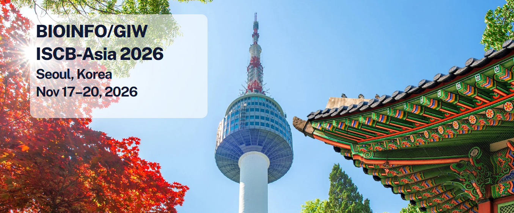
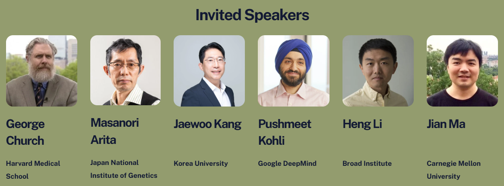

We are thrilled to invite you to the BIOINFO/GIW ISCB-Asia 2026 conference. GIW has grown into one of the longest-running and most respected bioinformatics conferences since 1990. This year's program highlights the transformative role of artificial intelligence and machine learning across genomics—from protein structure prediction and single-cell analysis to drug discovery and precision medicine.
We look forward to an exciting lineup of keynote talks, oral presentations, and workshops featuring the latest advances in computational biology. Seoul's vibrant research community and world-class infrastructure make it the perfect setting for collaboration.
We warmly welcome contributions from researchers at all career stages and sincerely hope you will join us in Seoul.

Join us for an inspiring meeting and foster new connections across the Asia-Pacific region and beyond.
Warm regards,
Giltae Song, Sunjae Lee, and Joon-Yong An
Program Committee Chairs, BIOINFO/GIW ISCB-Asia 2026
© 2026 BIOINFO/GIW ISCB-Asia. All rights reserved.